Читатель, впервые взявший в руки этот труд, должен прежде всего понять одну истину континента: срок жизни здесь определяется не только природой народа, но и кошельком.
Развитая и относительно доступная целительская магия разделила Лаернис на два неравных мира. Те, кому она доступна — знать, маги, зажиточные торговцы, чиновники, наёмники высокого ранга — доживают до пределов, указанных ниже, и почти не умирают от болезней. Простолюдины же, крестьяне и все, кому целители не по карману, редко видят и половину, и три четверти этого срока — обычно на 30–50% меньше.
Особый случай — маги, овладевшие подлинно высоким искусством. Для них смерть от старости практически перестаёт существовать, вне зависимости от народа, к которому они принадлежат. Оттого при дворах и в гильдиях континента складывается обманчивое впечатление, будто долгоживущих народов куда больше, чем есть на самом деле: один и тот же эльфийский советник или дварфийский архимаг остаётся на своём месте столетиями, пока десятки поколений людей сменяют друг друга рядом с ним.
Ниже — известные народы континента, с указанием их доли в общем населении и предельного срока жизни при должном уходе.
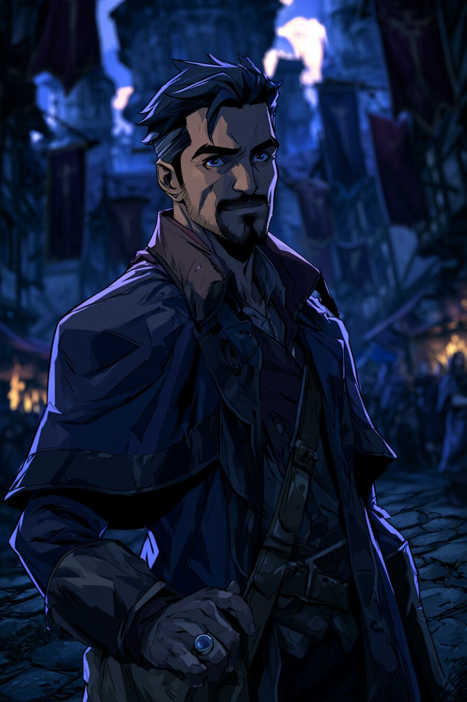
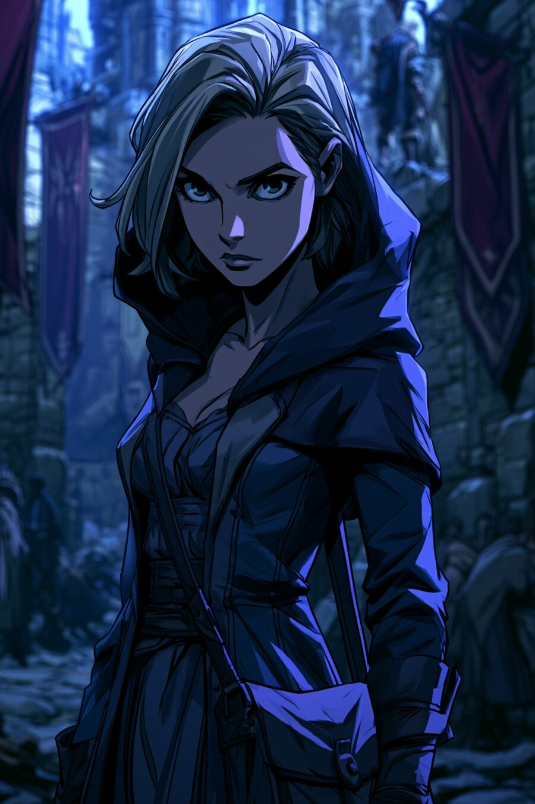
Самый многочисленный народ Лаернис и становой хребет его торговли, армий и престолов. Короткий, по меркам эльфов и дварфов, век люди привыкли компенсировать скоростью — они быстрее строят состояния и быстрее их теряют, быстрее меняют ремёсла и быстрее хватаются за оружие. Именно люди задают темп, в котором живёт весь континент, просто в силу своей численности.
Человек, переступивший порог магического бессмертия — редкость, о которой говорят как о живой легенде. Обычный же смертный смотрит на свою жизнь как на короткую гонку, отсюда — присущая людям одержимость наследием, титулами и стремлением успеть оставить след при жизни.
Ни один другой народ континента не может похвастаться такой пестротой судеб внутри самого себя: среди людей с равной лёгкостью встречаются и величайшие подвижники, и худшие мерзавцы континента — единой человеческой «природы», определяющей характер заранее, попросту не существует.
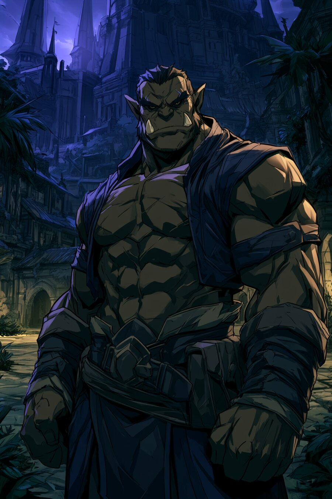
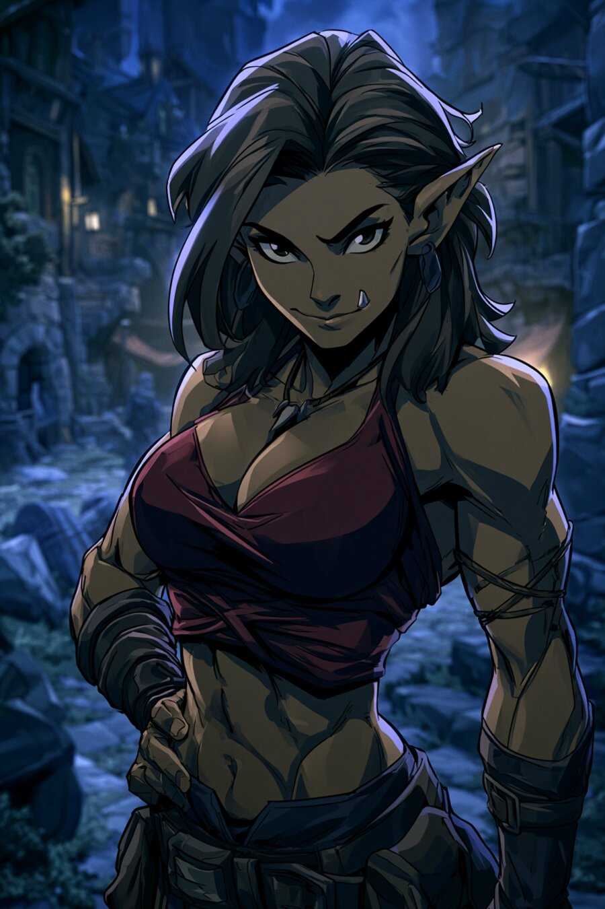
Второй по численности народ континента после людей. Живут как в городах, полностью встроенные в торговлю и ремёсла, так и дикими племенами на приграничье — и это разделение не расовая судьба, а вопрос истории конкретной общины: одни племена давно осели и пустили корни в городах, другие держатся окраин по старым обычаям.
Народ ценит силу, прямоту и славу, добытую собственными руками — даже самый оседлый и цивилизованный орк редко забывает, что честь нужно доказывать делом, а не происхождением.
И городские, и племенные орки одинаково крепко держатся кровных и клановых уз: обидеть одного орка часто означает нажить вражду с целой семьёй или отрядом, где бы они ни осели.
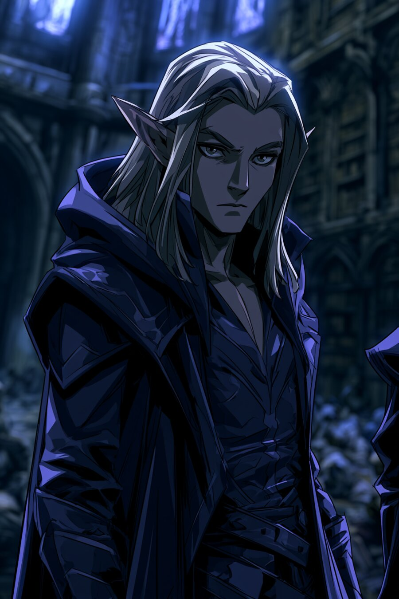
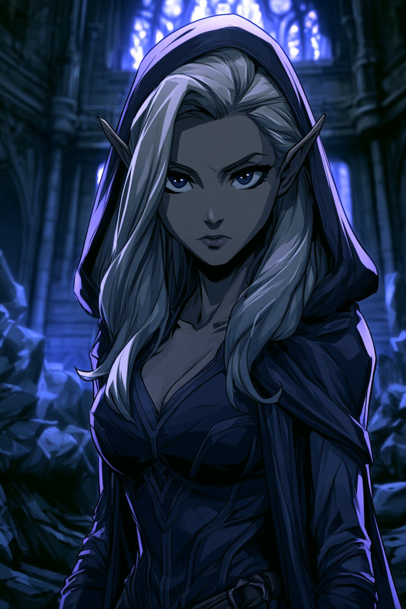
Формально составляют лишь малую долю населения континента — но благодаря немыслимому долголетию кажутся куда многочисленнее в высших кругах, среди магов, торговцев и чиновников. Среди простого люда эльф — редкость: их рождаемость крайне низка, и почти каждый доживший до зрелости эльф так или иначе поднимается по общественной лестнице просто в силу веками копившегося опыта, богатства или мастерства.
Важная черта народа: эльфы не считают себя выше прочих. Долгая жизнь породила в них скорее философскую отстранённость и терпение, чем чувство превосходства, и потому эльфов можно встретить в самых разных ролях — от магии и дипломатии до простого ремесла и скитаний с мечом в руке.
Веками не старея внешне, эльфы измеряют время иначе, чем короткоживущие соседи — целое человеческое поколение для них не более чем один недолгий эпизод, отчего искусство, музыка и неспешное совершенствование мастерства ценятся ими куда выше сиюминутной выгоды.
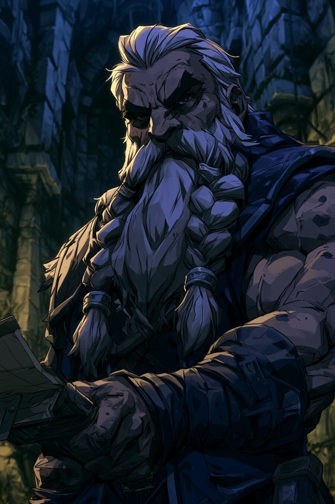
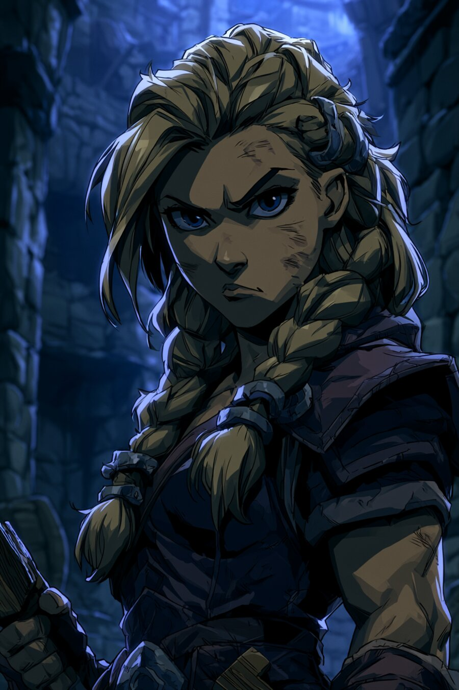
Живут вчетверо-впятеро дольше людей, и это определяет всё в их укладе. Дварфийские кланы — такие, как род Стормхаммер, славящийся своими рудниками и оружейными кузнями, — ведут дела, союзы и вражды поколениями глубже, чем способна удержать человеческая память. Дварф в полтора века всё ещё считается молодым — только начинающим мастером или воином.
Обида, нанесённая деду, остаётся живой и насущной для внука спустя два столетия — просто потому, что дварф, который её помнит, вполне может быть жив до сих пор. Кланы славятся упорством, верностью подземным залам предков и памятью, которая не прощает и не забывает.
Клятва, данная дварфом, почитается едва ли не священной — нарушивший слово рискует репутацией рода на века вперёд. Немногое ценится среди них выше доброго клинка, крепкого эля и права называть свою работу лучшей в зале.
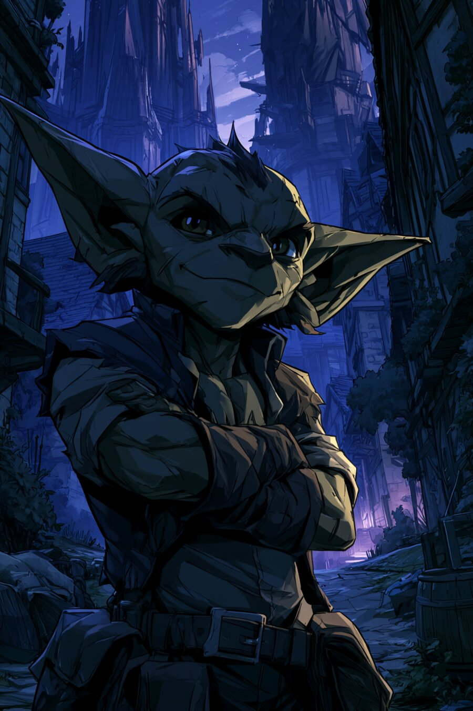
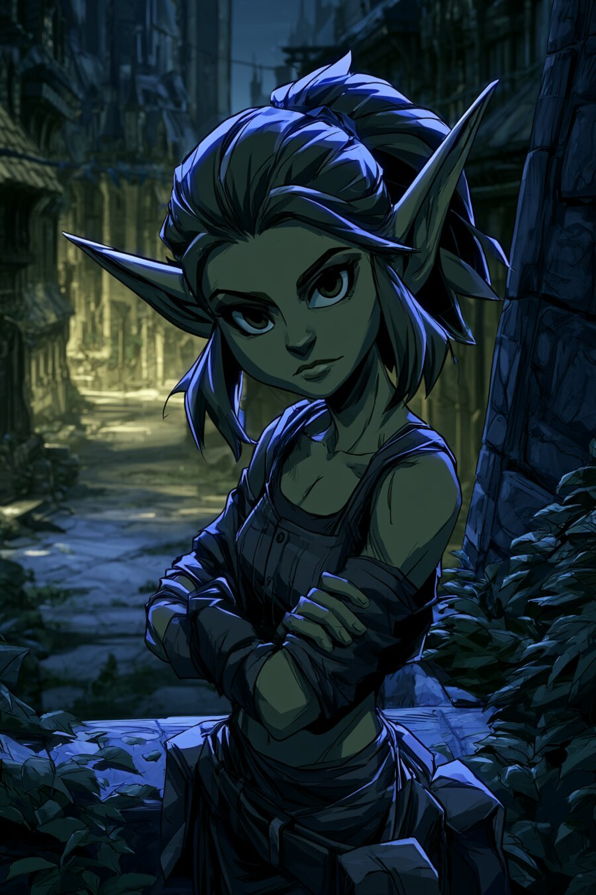
Ростом гоблины невелики — примерно как гномы, разве что зеленокожие: щуплое, юркое тело, редко выше метра с небольшим, что вкупе с проворством делает их отличными разведчиками, взломщиками и мастерами на все руки в тесных пространствах. Живут как в городах на правах обычной бедноты, так и дикими шайками за пределами закона — но важно понимать: гоблины Лаернис не отмечены никаким древним проклятием и не предрасположены к злу по своей природе. Их репутация — плод истории конкретных племён, а не расовой судьбы.
Изворотливые, приспосабливающиеся, зачастую недооценённые из-за роста — цивилизованный гоблин по укладу жизни мало чем отличается от бедного соседа-человека или орка, разве что более настороженным взглядом, привычным к чужому пренебрежению.
Сплочённость и изобретательность гоблинов также делают их незаменимым выбором для тех, кто ищет исполнителей для грязной или тонкой работы вдали от чужих глаз.
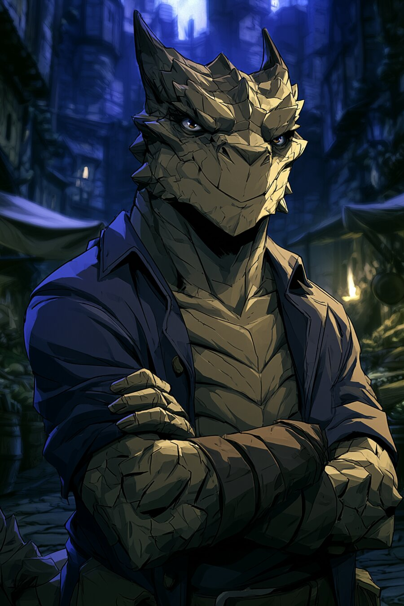
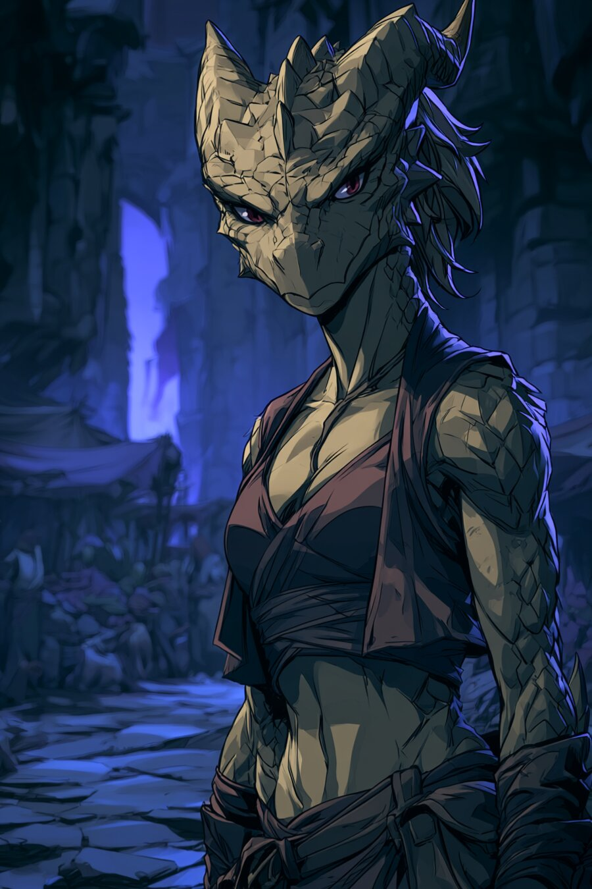
Народ, не имеющий никакого отношения к настоящим драконам, вопреки расхожему заблуждению. Драконорождённые были выведены в давние времена как неудачная попытка создать расу рабов с драконьей кровью — от замысла осталась лишь чешуйчатая внешность, но не сила, магия или родство драконов.
Это происхождение по сей день остаётся источником незаслуженной стигмы: драконорождённых нередко судят по легенде о рабских корнях народа, а не по делам конкретного человека. Тем не менее среди них встречаются и воины, и учёные, и торговцы — обычные жители континента, чья история началась с чужой неудачи, а не с их собственной вины.
Собственное государство драконорождённых — Кренис, возникшее как убежище от старого рабства и со временем ставшее их собственным домом и доказательством, что народ этот способен на большее, чем чужое рабство. Многие драконорождённые за пределами Крениса по-прежнему держатся собственных тесных общин, почти клановых по духу — сказывается, что общее происхождение связывает их крепче, чем бы то было принято считать в обществе, которое часто смотрит на них с предубеждением.
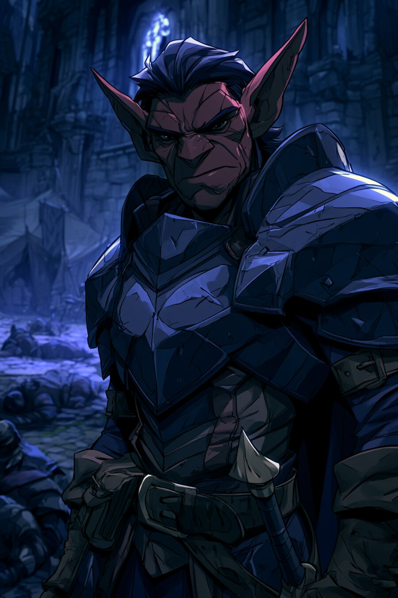
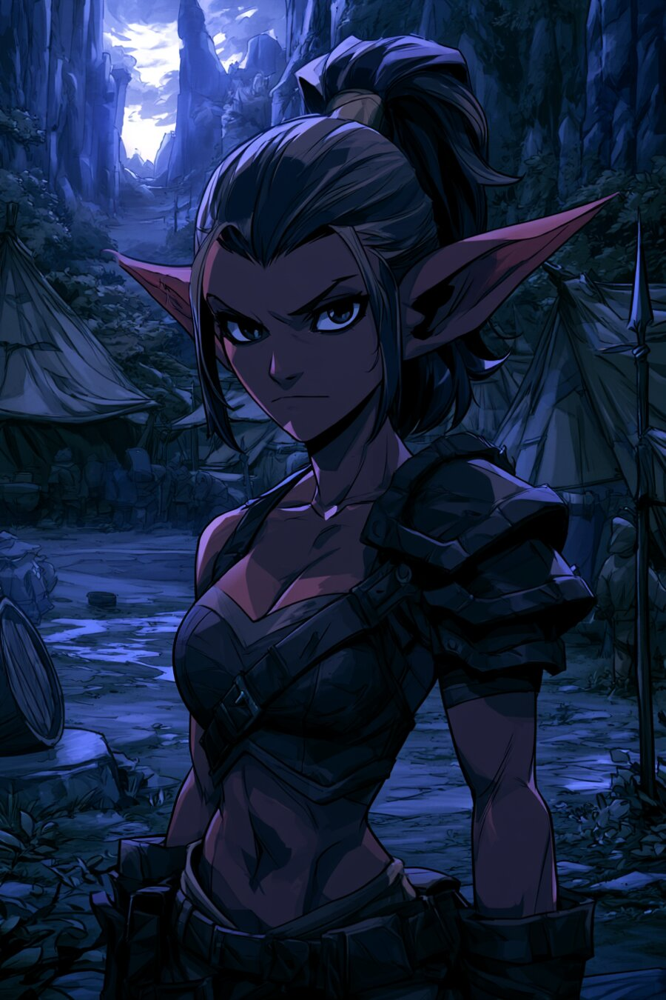
Более дисциплинированный и организованный народ, нежели их гоблинские родичи — хобгоблины традиционно собираются в военизированные наёмные отряды, продающие свои копья и дисциплину тому, кто способен заплатить. В армиях многих государств континента такие отряды — привычное подспорье в трудные времена.
Одно из немногих исключений — Тваансин, чьи законы и традиции не позволяют нанимать хобгоблинские дружины на службу государству, сколь бы выгодным ни казалось предложение.
Среди хобгоблинов честь отряда ставится выше чести отдельного воина — нарушивший приказ командира рискует позором всей дружины на рынке наёмников, а не только собственной шкурой.
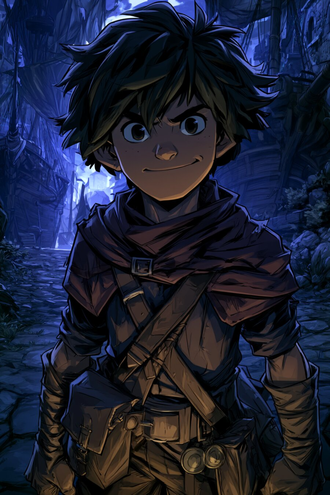
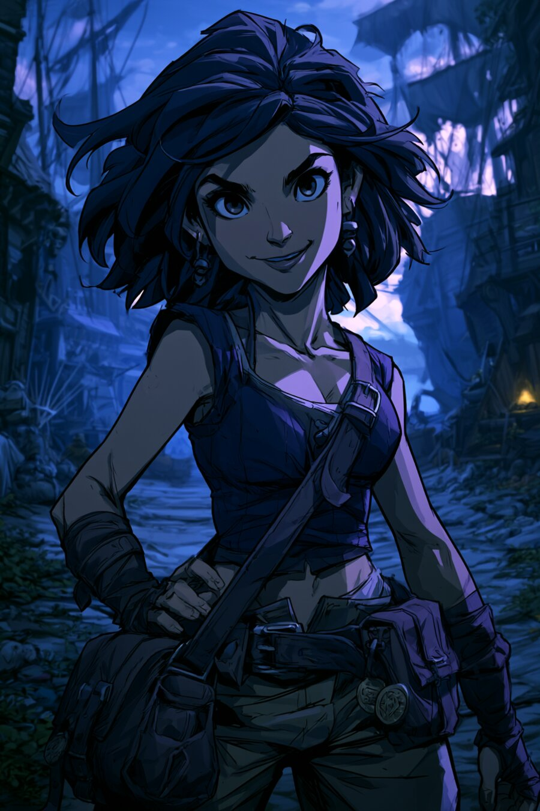
Живут дольше людей, но заметно выше ростом, чем принято думать о их народе в иных землях, и вместе с тем — одни из самых подвижных обитателей континента. Именно хафлинги традиционно правят бал в речной и морской торговле, курьерских гильдиях и странствующих труппах, где важны лёгкость на подъём и умение находить общий язык где угодно.
Народ ценит уют, доброе застолье и личную свободу выше знатности — хафлингу проще сменить город, чем присягу, которая ему не по душе.
За хафлингами также прочно закрепилась слава везунчиков — там, где другой народ угодил бы в беду, хафлинг чаще всего умудряется выйти сухим из воды, а заодно прихватить с собой что-нибудь ценное: пальцы у этого народа традиционно такие же ловкие, как и язык.
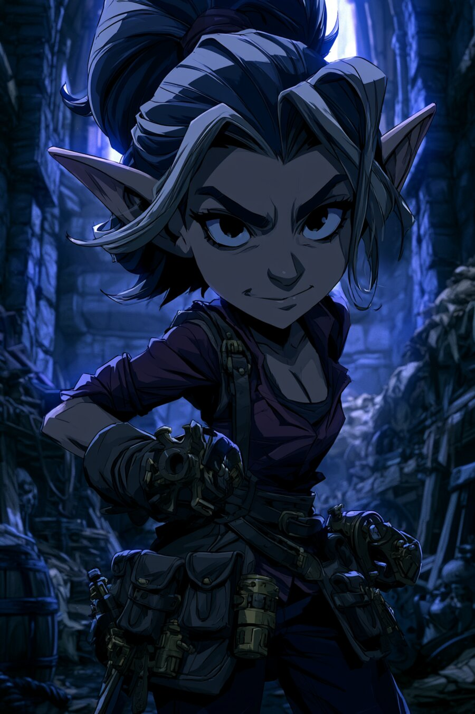
Живут немногим дольше людей, но достаточно долго, чтобы накопить редкую техническую или магическую сноровку, не дотягивая при этом до вечности эльфов и дварфов. Из этого сложился характер народа: неутомимое любопытство, страсть к механизмам и малым чудесам, склонность превращать ремесло в игру ума.
Гномы редко стремятся к власти — куда охотнее они занимают незаменимые, но негромкие должности инженеров, зачарователей и архивариусов, там, где важнее точный расчёт, чем родословная.
Народ этот также славится неуёмным чувством юмора и любовью к розыгрышам — говорят, что самая опасная ловушка на континенте не та, что убивает, а та, что придумана гномом просто ради смеха над результатом.
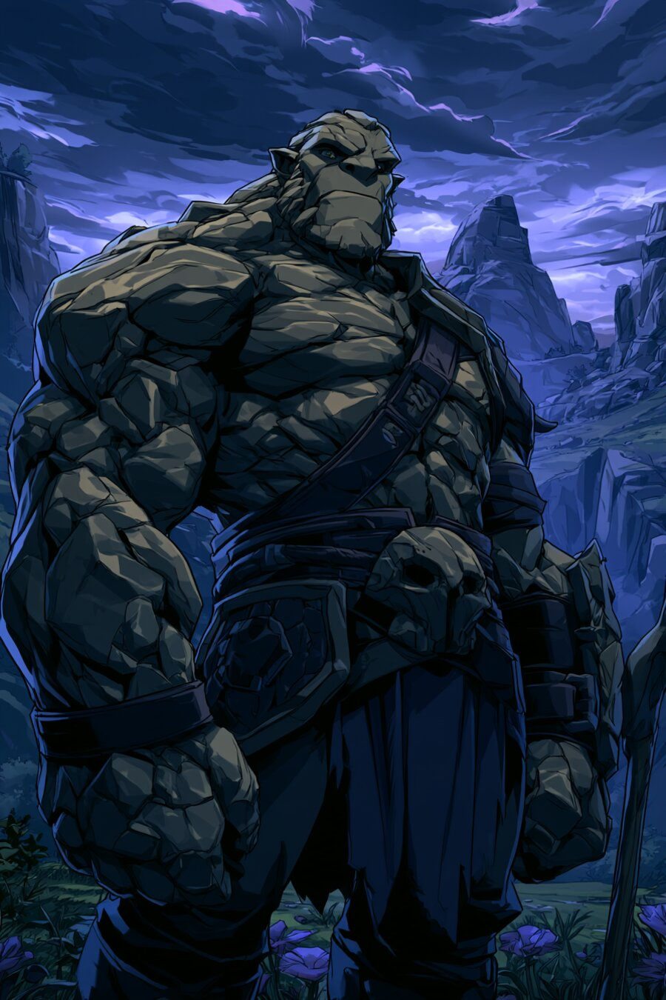
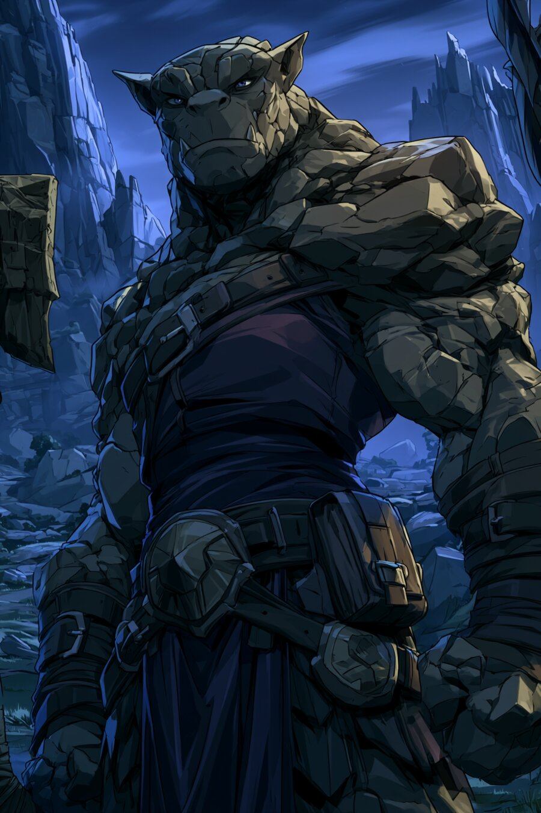
Вопреки байкам о безмозглых великанах, тролли Лаернис — народ вполне разумный и способный к государственности: за горными хребтами континента существует их собственное троллье королевство. Разновидностей немало — горные, степные и иные, отличающиеся обликом и укладом сообразно землям, где живут.
Организованность горных троллей не раз давала о себе знать на границах соседних государств — не стихийным набегом, а действиями войска, отправленного по чьей-то воле.
Каменная кожа и громадная сила делают троллей превосходными воинами и телохранителями, а их собственное королевство соседи предпочитают не трогать лишний раз без крайней нужды.
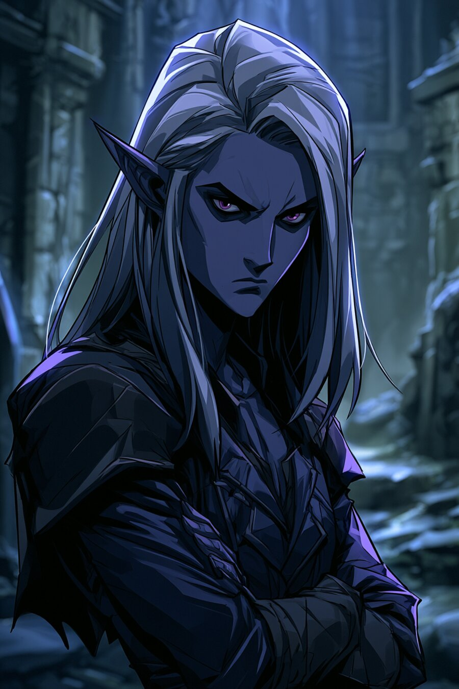
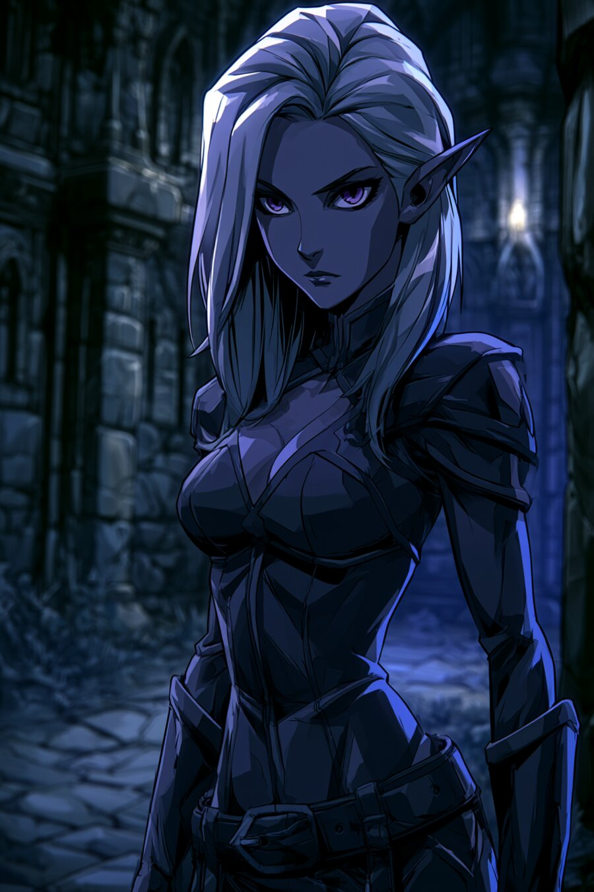
Родня обычным эльфам по продолжительности жизни, но разошедшаяся с ними в самом важном — во взгляде на мир. В отличие от подземных народов иных легенд, дроу Лаернис вовсе не страдают от солнечного света; их кожа лишь порой отливает синевато-фиолетовым или серым оттенком. Богам они не служат — собственная воля и порядок значат для дроу больше, чем благословение свыше.
Главное же отличие дроу от родичей — не философская отстранённость, а прямое чувство превосходства: этот народ убеждён в естественной иерархии рас, и убеждение это разделяют оба пола поровну — среди дроу нет разделения по власти между мужчинами и женщинами. Обитая преимущественно под землёй не по нужде, а по укладу, дроу издавна враждуют с дварфами — спор этот идёт не столько о рудниках и залах, сколько о том, кому из двух долгоживущих народов принадлежит право старшинства в глубине.
Место в их обществе определяется не рождением, а доказанным мастерством — в бою, в магии или в интригах чертогов, отчего дроу славятся как расчётливые и по-своему безупречно дисциплинированные противники.
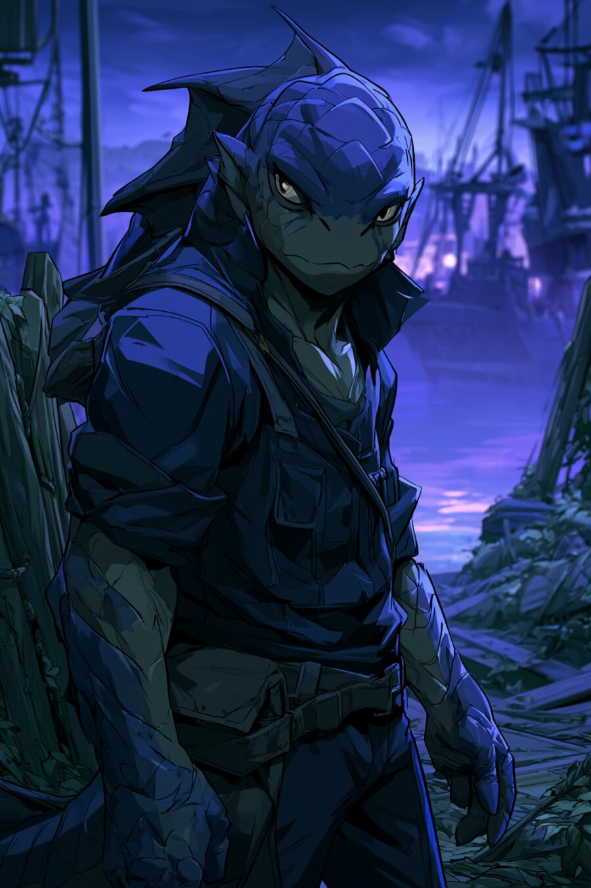
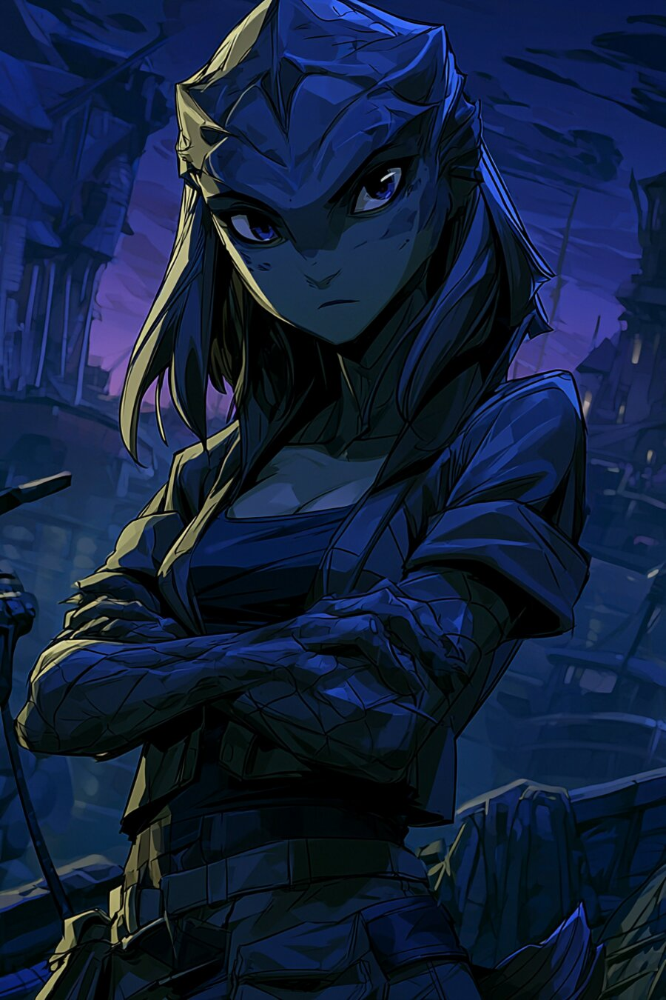
Самый редкий из народов континента наравне с харенгонами и табакси, встречающийся почти исключительно вдоль побережий и по берегам крупных рек — там, где вода даёт им дом и заработок. Вдали от моря рыболюдей почти не увидеть, и в делах суши они редко ищут власти, довольствуясь ролью незаменимых знатоков всего, что связано с водой.
Среди моряков и речных гильдий рыболюди ценятся как лоцманы, проводники и знатоки течений — там, где человек или дварф видят лишь ровную гладь воды, рыболюди читают течения и повадки дна, как открытую книгу.
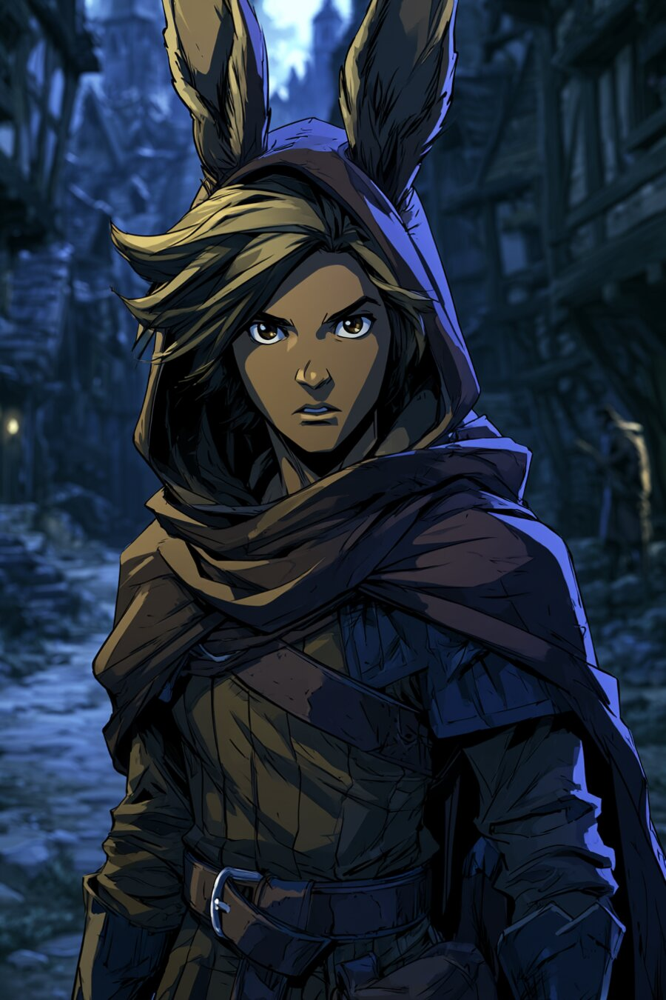
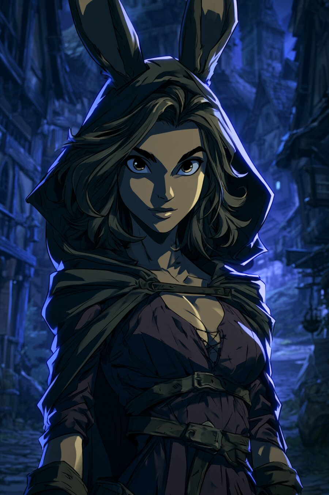
Народ, в этом мире гораздо ближе к людям, чем принято думать — результат магической мутации, наделившей их долголетием и живой реакцией кроликов, но лишь минимумом внешних черт: чуткими ушами, изредка хвостом и лёгким шёрстным покровом. Во всём прочем харенгон — обычный человек, разве что переживший всех своих ровесников на пару веков.
Не имея собственной древней культуры, отдельной от человеческой, харенгоны попросту живут среди людей — приметная особенность отдельных семей, а не самостоятельный народ со своими царствами и традициями.
Говорят, что от прежней крови харенгонам досталась не только быстрота, но и жизнелюбие, иногда граничащее с беспечностью перед опасностью.
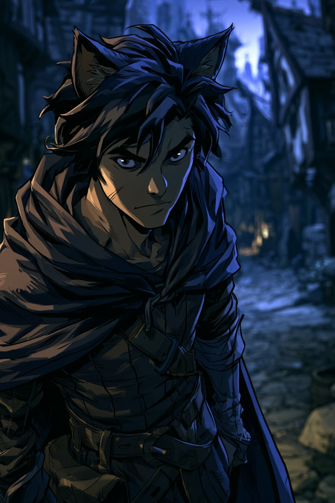
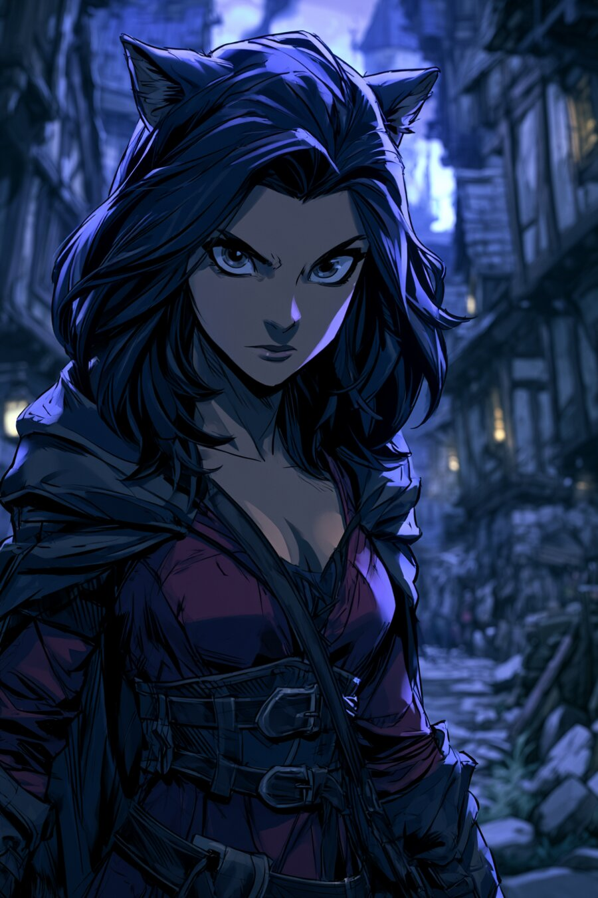
Зеркальный случай харенгонов: табакси этого мира — тоже результат магической мутации людей, а не отдельный древний кошачий народ. От кошек им досталось долголетие, гибкость и быстрая реакция, а из внешних черт — чуткие уши, изредка тонкий хвост и лёгкий шёрстный покров, не более того.
Как и харенгоны, табакси не имеют собственной обособленной культуры и живёт бок о бок с людьми — редкая, приметная особенность отдельных семей и родов, а не самостоятельный народ со своей историей.
Нередко именно табакси выбирают стези воровства, шпионажа или бродяжничества — кошачья ловкость и любопытство так же часто влекут их в беду, как и в удачу.
| Народ | Доля населения | Предельный срок жизни | Ключевая черта |
|---|---|---|---|
| Люди | 42% | 110–120 (маги — бессрочно) | Численное большинство, задают темп |
| Орки | 15% | 80–90 | Города и дикие племена бок о бок |
| Эльфы | 7% | 3000–4000 (маги — бессрочно) | Не превозносят себя, доминируют в верхах из-за долголетия |
| Дварфы | 6% | 500 | Родовая память через века |
| Гоблины | 6% | 50–60 | Без проклятия, обычная городская беднота, ростом с гномов |
| Драконорождённые | 5% | 80–90 | Искусственный народ, имеют государство Кренис |
| Хобгоблины | 4% | 50–60 | Военные наёмники; не служат Тваансину |
| Хафлинги | 4% | 120–140 | До 140 см, торговля и мореходство |
| Гномы | 3% | 120–150 | Нишевые технические умельцы |
| Тролли | 3% | 50–60 | Разумны, имеют собственное королевство |
| Дроу | 2% | 4000 | Расисты, равенство полов, вражда с дварфами |
| Рыболюди | 1% | 50–60 | Побережья и реки |
| Харенгоны | 1% | 200 | Мутировавшие люди, кроличьи черты |
| Табакси | 1% | 200 | Мутировавшие люди, кошачьи черты |